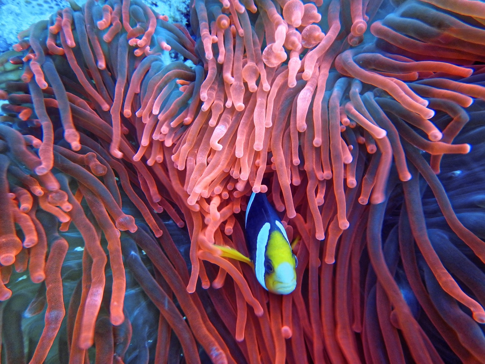
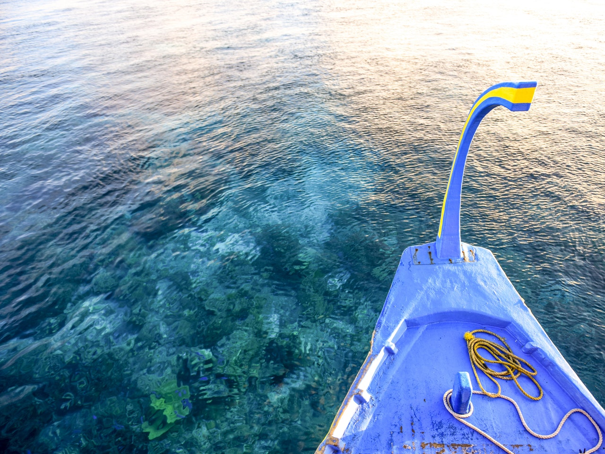
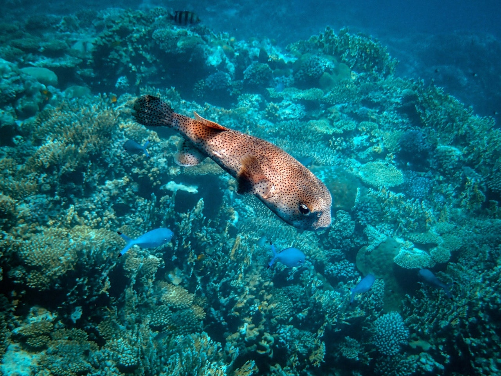
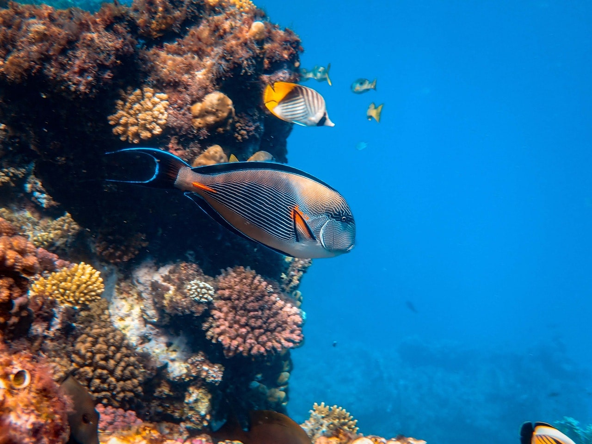

Hi I’m Glenroy-Terence, I would have introduced myself to you at the meets up as Terry for short. I know, a double barrel first name can seem OTT on first introductions.
Welcome to my first website, other than using a little html for myspace or creating a Bigcartel. For my site I have chosen images and a font that reflects me. It has an coastal/sea theme as that is when I’m at my calmest and as you journey down the page I dive deeper into code (pun intended).
What an experience so far… The learning curve has been fast, challenging and rewarding. I never thought I would be jumping around and fist pumping the air debugging code or completing a kata, what a feeling when you crack it! FAC has been fantastic, it’s been great pairing up at the meet ups and working with a diverse group of people. It’s so refreshing to see genuine collaboration.
A little about me, I spent my early career as an Technical Officer working on signalling systems for London Underground. This involved mechanical and electrical fault finding on program machines and signalling circuits. I then went onto be a music producer and DJ for Sony / Virgin and BBC Radio 1xtra. Which turned into me being the first employee of a gaming start up as a project manager. Alongside the CEO we had to hire a team of developers without a developing background. I was working closely with this team deciding how the app would function and key design aspects. This is where my interest was sparked for coding, I always was asking questions on how things actually worked. I now run my own business a craft hot sauce company. I taught my self how to use photoshop to build and design a brand which is stocked in Selfridges. I hope you can see I have the passion to learn and embrace new challenges.
It’s now time for me to utilise my experience a fulfil a burning desire to create tech. What I love about tech is that there is a genuine chance to change the world, on a community level or at scale. The fact that code can be reproduced digitally with marginal costs, means the possibilities are endless and cheap enough to be accessible to all. This it what fires my passion for coding. You can see from my career history it embodies everything I like to do. Being creative, helping others, problem solve and continually evolve, while learning new skills and technology. I would relish the opportunity to join founders and coders to learn new skills and share my own, so we can all make a change for good in tech.
1 / 5

Clown fish
2 / 5
.jpg)
Turtle
3 / 5

Small diving boat with divers below
4 / 5

Dogface Puffer Fish
5 / 5

Fish on the reef